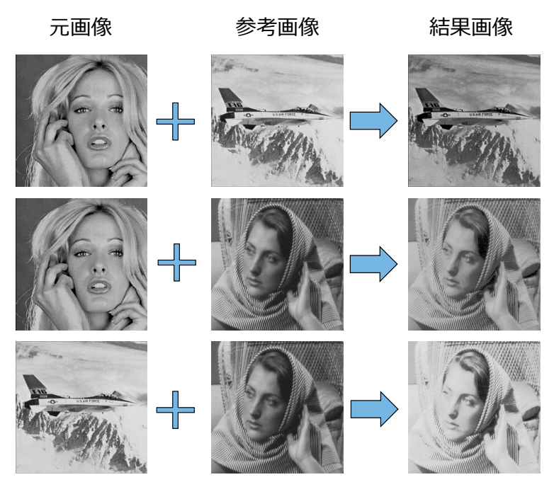

概要
- 研究室内コンペでの発表を目的として、個人で制作
- 参考画像を用いて、元画像のヒストグラムを保ったまま別画像を生成
- 画像処理におけるヒストグラム操作の理解を深めることを目的とした
画面・動作イメージ

使用技術
機能
- 元画像を読み込み、画素情報からヒストグラムを生成
- 参考画像を解析し、元画像と同様の色調を持つ画像を生成
工夫点
- 処理時間を短縮するため、画素データの並び替えにコムソートを採用
- 参考画像を変更するだけで、異なる色調の画像を生成できる構成とした